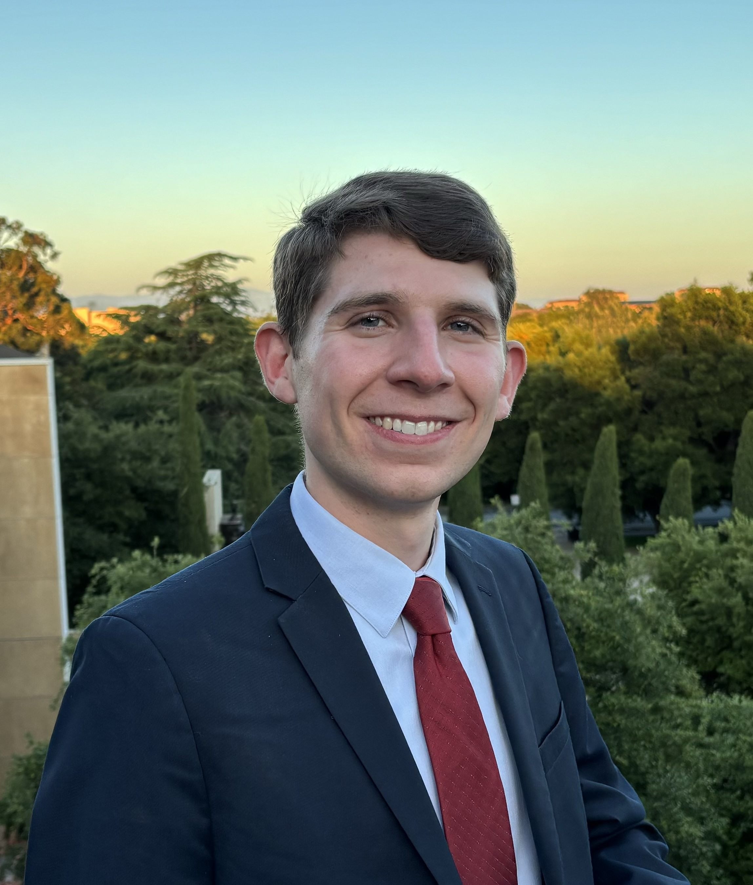

About Me

Hello, welcome to my personal website! I am a theoretical astrophysicist specializing in neutron stars and black holes. I am a SCEECS Postdoctoral Fellow joint between Columbia University and the Canadian Institute for Theoretical Astrophysics at the University of Toronto. I earned my PhD in physics in 2026 from Stanford University, where I was advised by Roger Romani and Roger Blandford. Before that, I was an undergraduate student at Columbia University, where I served as a member of the LIGO Scientific Collaboration and studied features of merging compact binaries under the mentorship of Szabolcs and Zsuzsanna Marka. My research broadly focuses on relativistic outflows produced by these compact objects and the interaction with their environments, although they span all of high-energy astrophysics. I am currently studying pulsar wind nebulae, the nHz gravitational wave background, and dHz gravitational wave detection. My thesis work was concerned with pulsar winds in spider pulsars (millisecond pulsars which ablate their close low mass companion), as well as relativistic jets launched by supermassive black hole systems. I have also studied gravitational wave sources and gamma-ray bursts. I am a member of the Simons Collaboration on Extreme Electrodynamics of Compact Sources (SCEECS). You can learn more in the Research and Publications pages of this site.
For Fun
When not doing physics, I can most likely be found outside running, since I enjoy training for and racing marathons. I am an avid baseball fan and love the New York Yankees. I also speak Spanish and Portuguese and have been involved in science outreach programs that connect with the Hispanic community in the San Francisco Bay Area (which you can read more about in the Outreach page).
Contact
Email me at: asullivan@cita.utoronto.ca